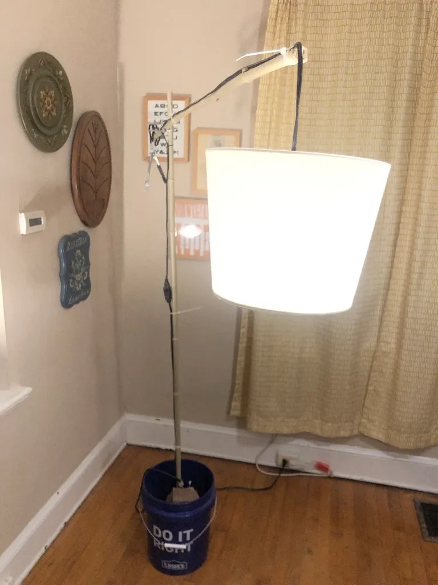
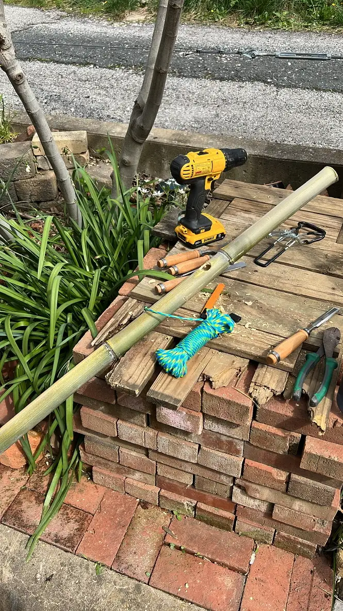
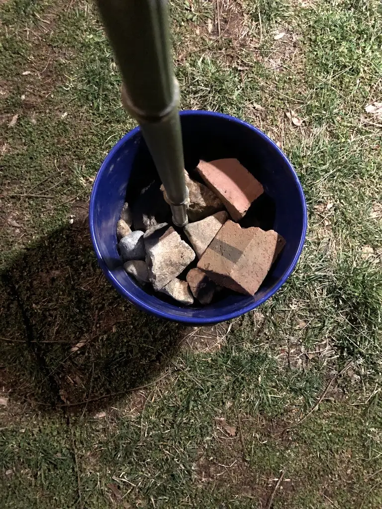
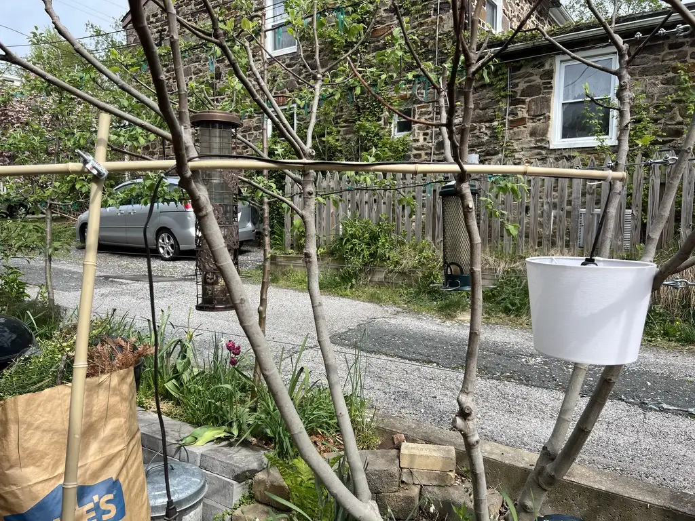
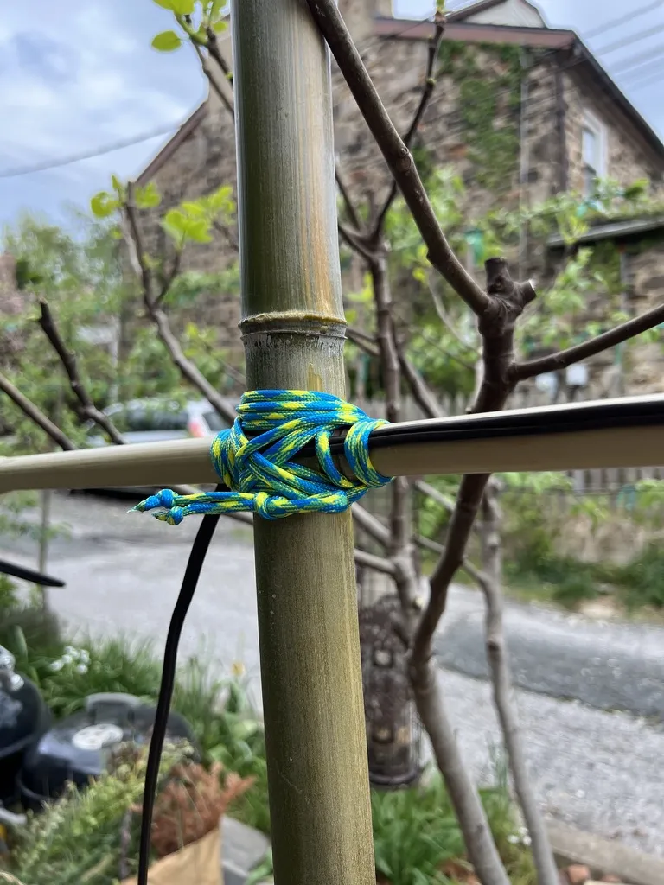
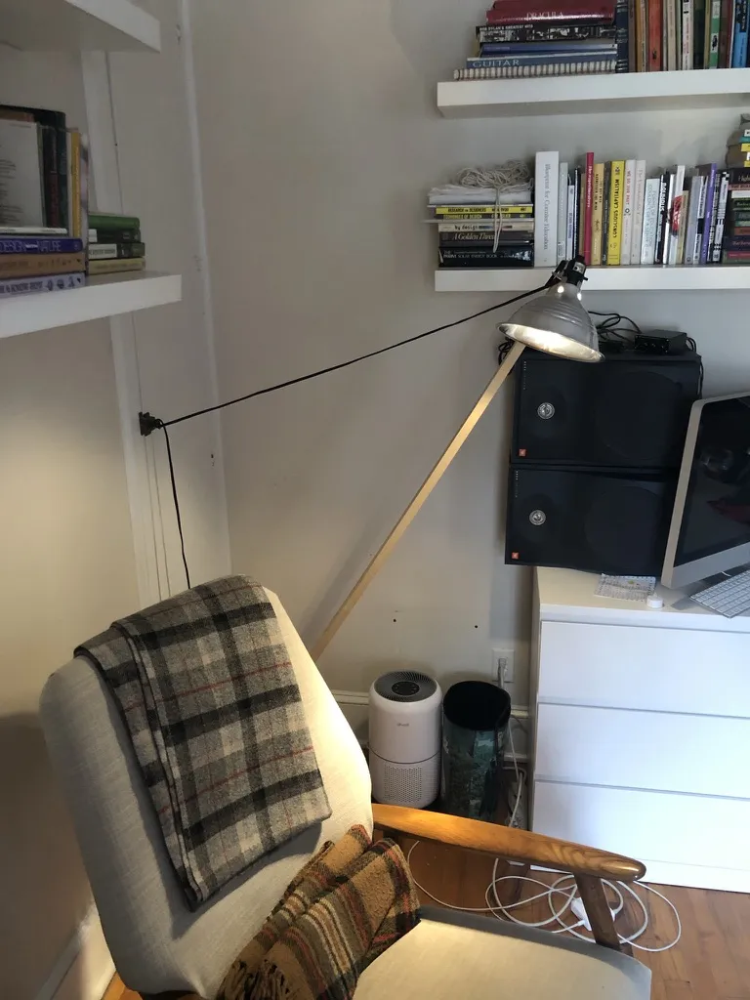
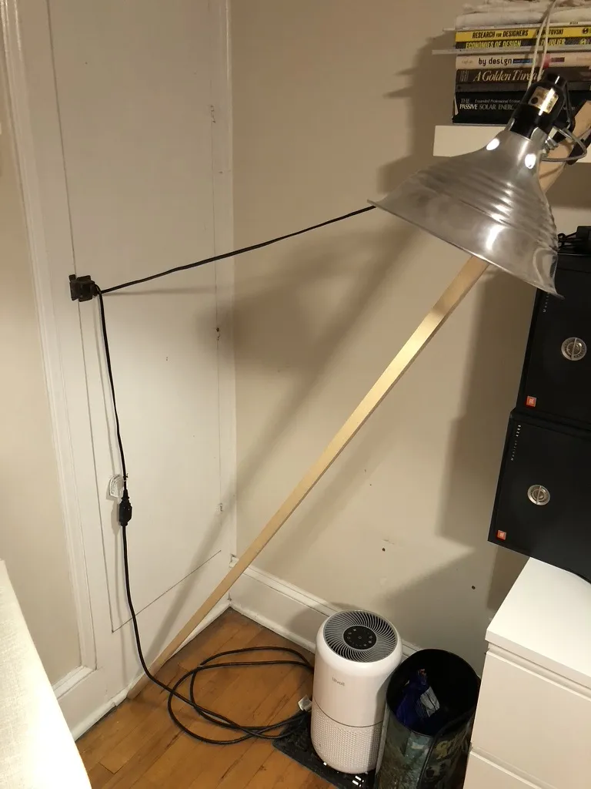

When something in the house needs a lamp, I build one from whatever is around. I’ve made six so far, at school, at home, and for colleagues. A five-gallon bucket. Bricks and rocks from a rubble heap in an alley. Bamboo cleared from the yard. The guts of a clip-on painter’s light, rewired. Once, the lamp’s own cord, pulled tight as part of a tensegrity structure, held a reading light over someone’s shoulder in a rocking chair for a few hours.
For the second bucket lamp, I lashed a bamboo arm to a bamboo pole with paracord, tested it hanging in the yard, then set the pole in a bucket packed with broken brick.
Every act of making is also an act of unmaking. I build each lamp to stop being a lamp as easily as it started. When the need passes, the parts go back to being a bucket, a rock, a bamboo pole, or they go out to the garden or the compost pile. The question comes from The Sustainabilitist Principles, years earlier: what if a design didn’t exist?
The next one starts when the next need does.






